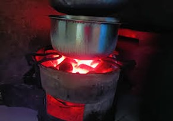

Rural women are adopting innovative cooking technologies to reduce reliance on firewood and preserve land resources.
Innovations:
- Energy-Efficient Stoves: Using less firewood, reducing the pressure on forests.
- Briquettes from natural vegetation like wetlands: Currently we are experimenting anaerobic digestion technology in collaboration with the State University of New York at Buffalo.
This innovation will carbonize organic matter such as papyrus reeds.